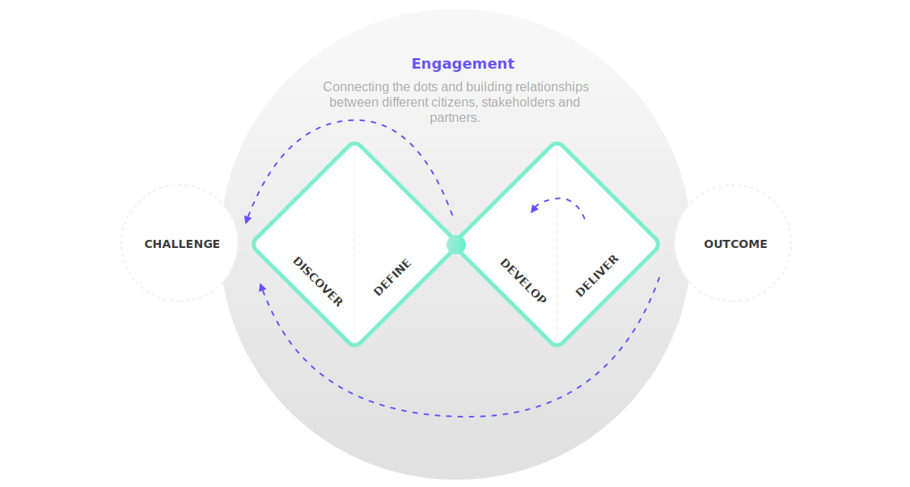
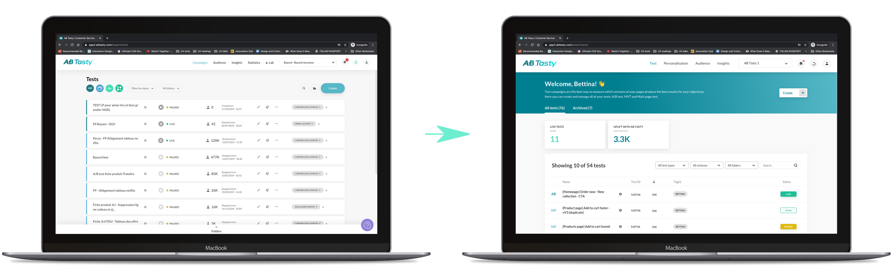

Dashboard for CXO campaigns management
AB Tasty is an all-inclusive B2B/SaaS tool for website and conversion rate optimization, personalization, user engagement, and A/B and MVT testing. Marketing, product and tech teams use AB Tasty’s AI-driven experimentation, personalization and product optimization platform to rapidly drive ROI and continuously deliver outstanding user experiences.

Context
This project was the first one we built together as a team, so we knew that we had challenges ahead. The dashboard on AB Tasty is one of they key pages on the platform where users see, manage, edit and create new content. It provides a global overview, with access to the most important data, functions and controls. In AB Tasty's case, the campaigns dashboard is also the homepage in the platform, for newbies and power users. And because none of the previous squads had any ownership on this project, the Dashboard has generated a huge design debt throughout the past years.
Why we did this project
- Technical debt: migration to React.js was necessary
- Design debt: usability issues accumulated over the years due to lack of ownership

Process
The design process started around two months before preparing the backlog for the 6-week cycle with the research phase. Inspired by the Double Diamond Diagram framework and Design Thinking methodology, I focused on the Discovery phase first, trying to collect as many data and feedback as possible before framing the problem.
At that point the team has already gathered a lot of existing feedback from clients from previous projects and from different team. Therefore, I conducted new interviews and new usability testing with same clients, plus with other clients that that also fit in the scope, in addition to Customer Success Managers and stakeholders.

After detecting the main pain points and prioritizing the most critical ones, we decided on the scope for out MVP. We knew the project was big so therefore we used the MoSCoW method to cut it into different versions, so we were sure we could deliver something valuable to the end clients at the end of the development cycle.
We planned a development cycle of 6 weeks, using sprints of 2 weeks (3 sprints in total). But the entire project took 16 weeks instead, due to some bumps on the way (COVID-19, less working hours, change of people on the team).
Ideation
I started the ideation process for our MVP + future versions. In terms of solution, I decided it was better to design not only the MVP but the full scope to make sure that the MVP would be scalable. This approach affects not only the UI and UX decisions but also the development process. We wanted to make sure that all decisions we made as a team would be futuristic: making the MVP scalable to embrace improvements and new features we know will come.
Prototyping
I started creating different versions of mockups that were iterated and tested internally, using tools such as Sketch, Zeplin, InVision, Adobe XD and Loom (to record the interviews). I used Sketch to build the mockups, Zeplin to show the specifications to the development team, InVision to create the click-dummy prototype for the usability interviews and Adobe XD to generate animated mockups to explain interactions and transitions to developers.

A new round of usability testing sessions took place after the project was validated by the C-level board. I wanted to make sure that the final solution for the MVP was correctly solving the problems we framed before starting the development cycle.
Main pain points & solutions found
- According to many clients, it was impossible to know which campaigns are in QA mode. This causesed distress and waste of time before launching a campaign.
- A simple change in the UI solve the problem. The new status button is now detectable in less than a second, when scanning the dashboard.
- Start and end dates of campaigns are not clear.
- Previously only the creation date was visible. The solution found was to combine all important dates related to the campaign lifecycle: creation date, when the campaing was last played and when it was last paused.
- Filter components look more like CTAs than filters.
- All the filtering actions were gathered with the same UI and same behaviour. Things that look the same should behave the same - for better usability.
- Lack of consistency and clarity on the campaigns statuses: not clear when a test should be played or paused.
- The solution found was to visually separate the static elements from actions. Also, we added contextual actions to be revealed under clicks and hover behaviours, not to cluester the dashboard view with unnecessary information.
- Folders functionality is confusing. The folder icon/trigger appears in 3 different places on screen, with 3 different look & feel. The user engagement with this feature is very poor.
- Currently the folder functionality behaves like a filter. Therefore I removed the previous folder component from the bottom of the screen and replaced it with a dropdown filter at the top of the table, side-by-side with the other filters. However, the folders management requires a bit more functionalities than the other filters so I created a new component for our Design System: a dropdown list with dedicated actionable items on hover besides a new "create" button at the bottom.
- Clients want to delete tests from their folders but they can't.
- Still on the same subject, apart from the dropdown component with the mentioned interactions, I decided to create the same interactions directly inside the table, in each campaign individually. By clicking on "..." and next "add to folder", the user can see a check mark on the folder in which that campaign belongs to - if that's the case. The user is free to change that by clicking on the folder they want the campaign to be moved to. Plus, the user can create a new folder on the fly or remove the campaign from the current folder by clicking on the option "Remove from current folder".
- Test ID is very important because it's a common point of communication between the users, the customer support, CSMs, TSEs, developers and QA team. Currently is not very intuitive on how to see and copy the test ID.
- Firstly, I made the test ID more visible on the dashboard by displaying it under a dedicated column. Secondly, I added a quick "copy to clipboard" behaviour by just hovering over the test ID number. All you have to do is click to copy to copyboard.


Outcome
We planned a development cycle of 6 weeks, using sprints of 2 weeks (3 sprints in total). But the entire project took 16 weeks instead, due to some bumps on the way (COVID-19, less working hours, change of people on the team).
With this project, while addressing many user pain points accumulated over the past months, we were able to update the UI, increment small but smart UX improvements (without disrupting the current knowledge that users have from the tool, avoiding a big learning curve) and also launch new features.

- We increased the general NPS score from 25 to 45 within 2 months after the release (achieving a Business KPI)
- We applied CSAT survey with clients, which showed a 73% of approval of the new solution
- Positive feedback from clients and CSMs for our reactivity in solving the main pain points addressed above
- Scalable UI to expand existing features and to create new ones

Challenges & Learnings
This project was the first one we built together as a team and, at the beginning of the project, we didn't have a dedicated Product Manager in our squad, which "forced" me to grasp some of the PM's responsibilities side by side with the tech lead throughout the project. All in all, I am very happy to have done this very complex project with a balanced team and a very structured process. It was the first time I took part on backlog prioritisation and Sprint planning rituals, which means I was able to contribute with the Design perspective to the process of project management. For instance, we added Design review as mandatory step in the workflow for developers and we added the research process and its deliverables in the Sprint planning as well, delivering design value and context to the project at the end of every sprint.
Team
Product designer: Bettina D'avila
Tech lead: Manhulay Siriphol
Front-end developers: Jihan El-medini, Yanis Tam, Romain Giordano, Florian Eysseric
Product Manager (arrived at the end of the project): Christelle Mampuya

Dashboard for CXO campaigns management
B2B Web Platform
AB Tasty is an all-inclusive B2B/SaaS tool for website and customer experience optimization.

Mobile app for CXO campaigns management
B2C Mobile App
B2B mobile application for end users to follow and monitor their campaigns on-the-go.

Helping users to create a new password
B2B Web Platform
Changing our password is often necessary and, sometimes, mandatory. But never a fun task.